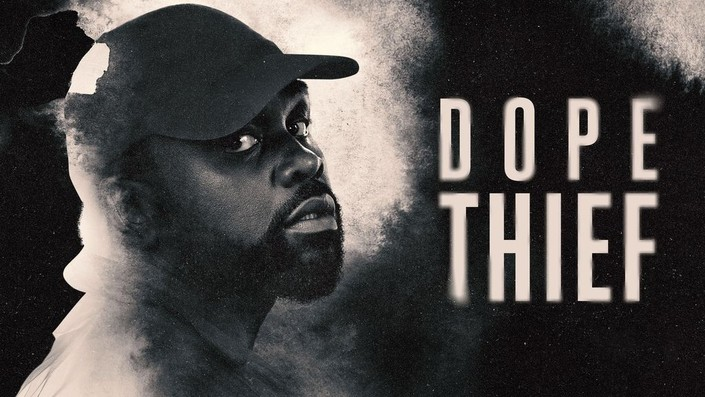
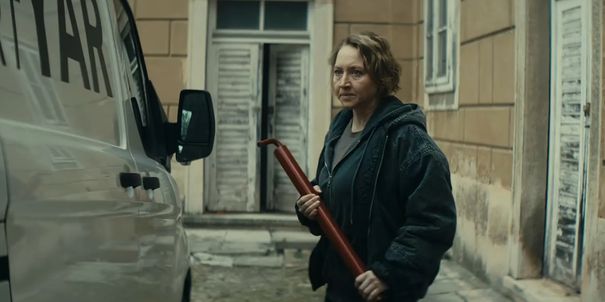
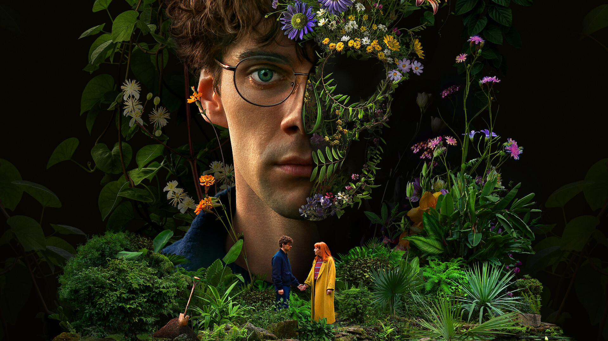
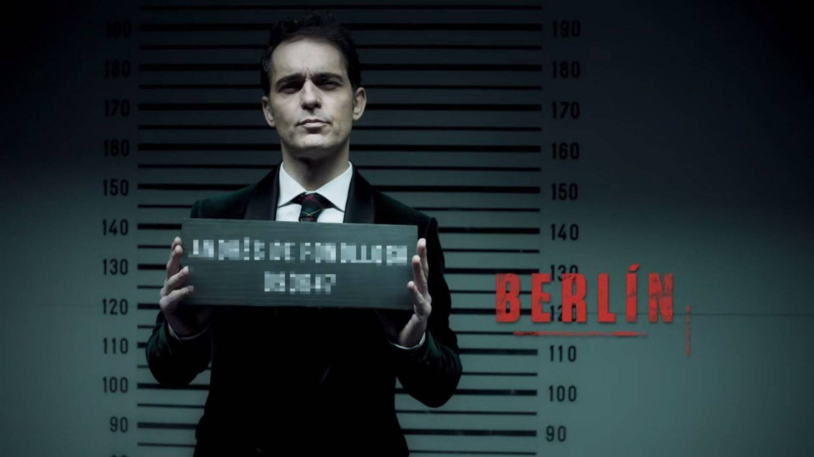

Welcome to the - The Storyteller
The Mystery Begins with "Lost"
4 8 15 16 23 42
"Lost" is a thrilling story of survival, mystery, and the unknown. A plane crashes on a deserted island, and the survivors must work together to uncover its secrets.


Main Characters

Jack Shephard
Played by Matthew Fox. Jack is a spinal surgeon and the natural leader of the survivors. His leadership skills are often tested as he tries to keep the group alive while grappling with his personal demons.He serves as the antithesis of man of faith John Locke
Kate Austen
Played by Evangeline Lilly. Kate is a fugitive on the run, and her troubled past catches up with her on the island. She becomes one of the most resourceful and courageous characters, willing to sacrifice for the group.As an adult, Kate killed Wayne, which she confessed to her mother before disappearing.
Hugo "Hurley" Reyes
Played by Jorge Garcia. Hugh Rayes is a supporting character who becomes an important part of the survivor's group due to his contributions to the island's survival efforts. he takes over as the Island's protector from Jack Shephard then takes Benjamin Linus (Michael Emerson) as his adviser, the same way Jacob (Mark Pellegrino) took Richard Alpert (Nestor Carbonell)
John Locke
Played by Terry O'Quinn. Locke is a former wheelchair-bound man who becomes one of the most important figures on the island. He embraces the island's mysterious forces and believes in its transformative power. He believes in mystical and spiritual explanations for why things happen on the island due to an objective "miracle" happening to him after the crash of Oceanic 815.
Upcoming TV Series
Dope Thief
Genre: Crime Drama
"Dope Thief" follows two friends who rob drug dealers but get caught up in dangerous criminal webs.
🎬 Watch TrailerWoman of the Dead
Genre: Thriller, Mystery
After the death of her husband, a woman dives into the dark secrets of her quiet town seeking revenge.
🎬 Watch TrailerThe Gardener
Genre: Thriller, Mystery
Elmer, an assassin posing as a gardener, is tasked with killing Violeta, a seemingly troubled young woman. The police catch wind of a suspected murder.
🎬 Watch TrailerBerlin
Genre:Thriller, Mystery
Berlin assembles a gang in Paris for an almost impossible heist for 44 million euros' worth of jewels from 34 cities in one night.
🎬 Watch TrailerTestimonial
"Lost is more than just a TV series – it’s an emotional roller coaster that keeps you on the edge of your seat. The plot twists and unforgettable characters make it the best TV show ever created."
Notable Episodes
Episode |
Watch Now |
Like |
|---|---|---|
| Episode 1: The Beginning | ||
| Episode 2: The Journey | ||
| Episode 3: The Finale |